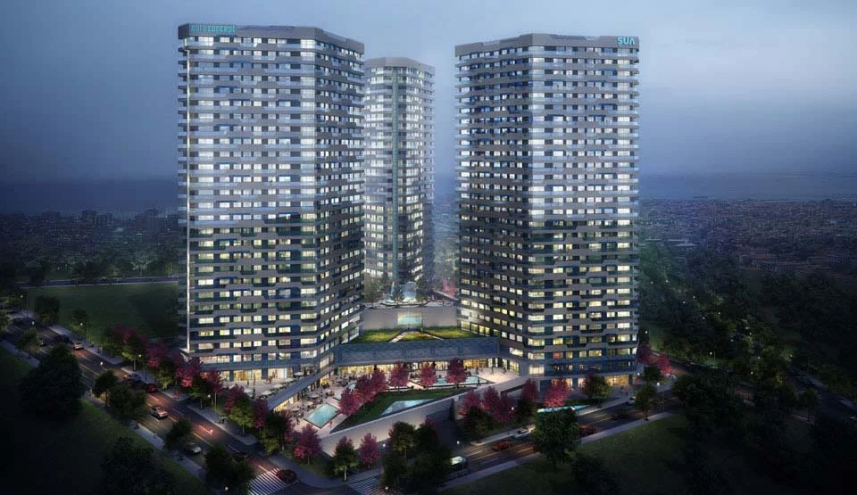

PROJECT OVERVIEW
Elite Concept
A residential development in Fikirtepe, Kadıköy, with 1+1 through 4+1 apartment options. The architectural presentation combines panoramic façades with landscaped areas and a street-level shopping concept.
DistrictKadıköy
Home options1+1 – 4+1
Project typeResidential and commercial
Photo gallery

Official architectural illustrations; these images do not show the current construction condition.
EVERYDAY LIVING
Living spaces
The project presentation includes landscaped walking areas, an indoor pool and commercial spaces beneath the residential blocks.
LOCATION AND ACCESS
Fikirtepe · Kadıköy · Istanbul
Fikirtepe, Kadıköy. The official project presentation describes connections to the wider Kadıköy area and Istanbul’s road and public transport network.
YOUR NEXT STEP
Choose your home
Request the current apartment selection, price and payment options. Compare the exact unit, view and included services before arranging your purchase.